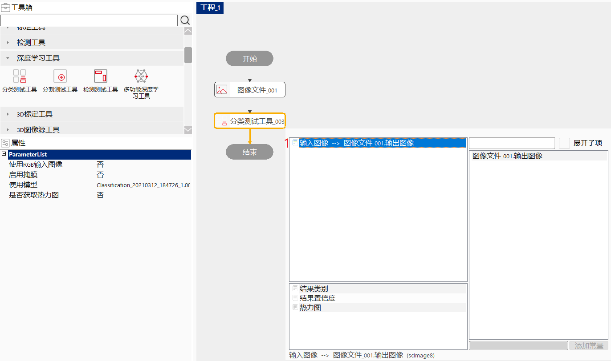

分类测试工具用于识别物体类别或区分不同场景，该工具的输入为单张图像及训练好的网络模型。输出为该图像对应的类别。
判别某张图像上是否有缺陷以及缺陷种类，如屏幕外观检测，适用于一张图像上的类别是单一的。
模型训练：通过训练来学习输入图像特征到输出类别的映射关系，这种映射关系是通过卷积神经网络来建立的。分类网络一般由多个卷积层、多个池化层和一个全连接层组成，层与层之间相连接，每一层的输出会作为下一层的输入；每一层都有自己的功能，第一层卷积层用来提取低级特征，如边缘特征，第二层后面的卷积层用来提取更复杂的组合特征，池化层进行下采样操作，用来减少数据量，全连接层用来分类；卷积层和全连接层都有参数，训练中会学习这些参数。
分类测试：实时图像会被输入到网络中，网络会输出该图像属于每一类的概率，概率最大的类别即为实时图像的分类结果。
双击“分类测试工具”，在弹出的数据链接对话框中，选择输入图像。

| 现象描述 | 解决方法 |
|---|---|
| 工具运行失败，提示“获取图像错误” | 检查输入图像是否设置，双击工具即可设置输入图像 |
| 工具运行失败，提示“调用深度学习算法错误” | 1、检查模型管理器中模型是否初始化成功；2、检查输入图像通道和宽高是否与模型相同 |
| 参数名称 | 参数说明 |
|---|---|
| 使用RGB输入图像 | “是”：数据链接中显示输入图像RGB参数；“否”：数据链接中显示输入图像参数 |
| 启用掩膜 | “是”：数据链接中显示输入掩膜图像参数；“否”：数据链接中不显示输入掩膜图像参数 |
| 使用模型 | 要使用的分类模型名称 |
| 是否获取热力图 | “是”：获取热力图；“否”：不获取热力图 |
| 参数名称 | 参数说明 |
|---|---|
| 输入图像 | 显示输入的检测图像 |
| 结果类别 | 类别的索引 |
| 类别名称 | 类别的名称 |
| 结果概率数组 | 每个类别的分类结果可信度 |
| 结果置信度 | 当前给出的分类结果的可信度 |
| 热力图 | 当前结果的热力图 |
| 模型路径 | 检测时使用的模型路径 |
| 执行结果 | 工具执行是否成功 |
| 执行时间 | 工具执行耗时 |
| 参数名称 | 参数说明 |
|---|---|
| 输入图像 | 显示输入的检测图像 |
| 热力图 | 显示热力图 |
| 执行结果 | 显示工具的执行结果 |
参见“\Samples\分类测试工具.gvp”。